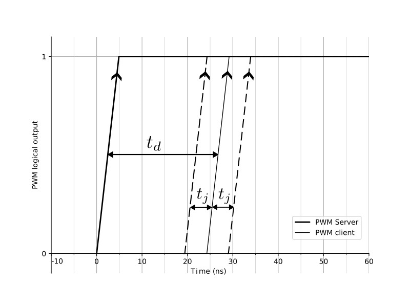
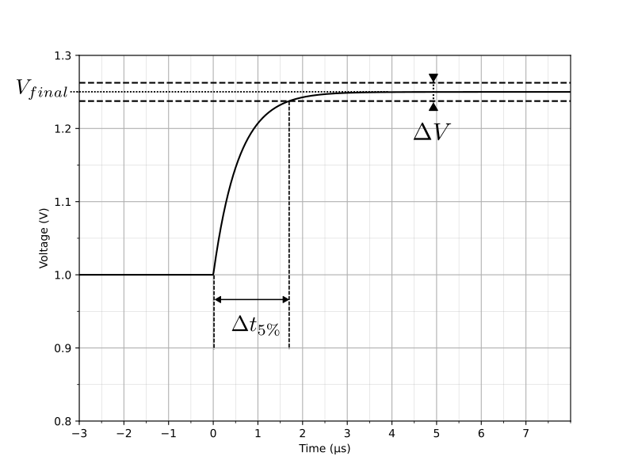
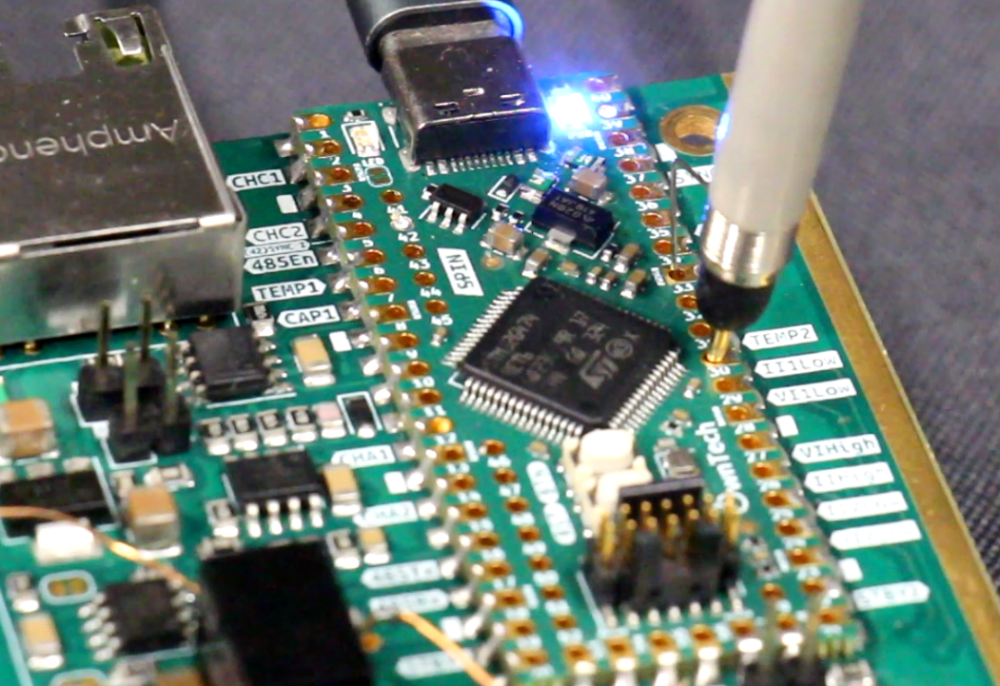

OwnVerter Board Datasheet v1.0.0
Overview
The OwnVerter Board is a reprogrammable, 1.3kW three-phase power converter designed primarily for motor control applications. It can interface with Sin-Cos encoders, optical speed sensors, and Hall effect sensors, providing precise feedback control.
The OwnVerter Board is fully open-source, compatible with either the SPIN board or other programming systems. It supports communication via CAN-bus or RS-485.
Check
- Rated Power: 1.3kW
- Number of Low-Side Channels:
- Three Low side
- Single High side
- Current ratings:
- 20Apk per channel
- 16A in parallel
- Voltage Ratings:
- 12V to 72V low-side
- 12V to 100V high-side
Attention
- 3-phase design
- Tripe, Dual or Single power channel configuration
- Up to 97% efficiency
- Standard size: 100mm x 160mm x 35mm
- Wide voltage operating range
- Motor control optimized
- CAN-bus and RS-485 communication compatible
- Fully open-source
- BLDC and FOC examples and control library available
- GitLab Source Code
Converter Pinout
The OWNVERTER converter pinout is shown in the image below.

Info
Danger
- Vhigh is the high side voltage
- A+/B+/C+ are the low side voltages. They are connected to the motor phases.
- GND is the power GND
- Feeder 6V is the 6V output of the embedded feeder
- D6V is the input of the digital 6V. You can feed it from an outside source.
- DGND is the digital ground
Success
- CAN1 and CAN2 the two pins of the CANBus
- RS485 +/- the two pins of the RS485 bus.
- Analog +/- the two pins of the analog bus.
- Sync I/0 the pin through which boards synchronize. It is the same pin for both master and slave operation.
- DGND is the digital ground
Electrical Specifications
Absolute Maximum Ratings
Low-Side Ratings
| Parameter | Min | Typ | Max | Unit |
|---|---|---|---|---|
| Number of Power Channels | - | - | 3 | - |
| Voltage Range | 12 | - | 92 | VDC |
| (Max Low-Side Peak Current per Channel) | - | - | 20 | A |
High-Side Ratings
| Parameter | Min | Typ | Max | Unit |
|---|---|---|---|---|
| Number of Power Channels | - | - | 1 | - |
| Voltage Range | 12 | - | 100 | VDC |
Switching Characteristics
| Parameter | Min | Typ | Max | Unit |
|---|---|---|---|---|
| Switching Frequency | - | 200 | - | kHz |
| Selectable Deadtime (20k resistor) | - | 200 | - | ns |
| Maximum Gate Current | - | 4 | - | A |
Temperature and Dimensions
| Parameter | Min | Typ | Max | Unit |
|---|---|---|---|---|
| Operating Temperature | -20 | - | +60 | C |
| Cooling Principle | - | Natural Convection | - | - |
| Dimensions (L x W x H) | 100 x 100 x 35 | - | - | mm |
Protection Features
| Parameter | Min | Typ | Max | Unit |
|---|---|---|---|---|
| High-Side Fuse (Tamb = 25C) | - | 25 | - | A |
| Low-Side Fuse (Tamb = 25C) | - | 25 | - | A |
Communication Specifications
CAN-FD
| Type | Parameter | Min | Typ | Max | Unit |
|---|---|---|---|---|---|
| CAN-FD | Baudrate | 500 | 500 | - | kBauds |
| Halh Duplex RS485 | Baudrate | 10 | 20 | - | MBauds |
| SPI | Baudrate | 0.5 | - | 20 | MBauds |
| USART | Baudrate | - | 115200 | - | Bauds |
Synchronization
Two OWNVERTER Boards can be synchronized via PWM sinc IN/OUT. Using a 15cm RJ45 cable, the delay and jitter between the server and the client PWM are measured as follows:
| Parameter | Symbol | Min | Typ | Max | Unit |
|---|---|---|---|---|---|
| PWM Slew Rate | - | 660 | - | - | mV/ns |
| Delay Between Server and Client | td | - | 24.2 | - | ns |
| Jitter of PWM Client | tj | - | 4.8 | - | ns |

Analog Communication
Analog communication between boards allows voltage and current measurement with high accuracy.
Example Measurement: - A 16-bit value of 2000 is transmitted by a server board. - Step response from 1V to 1.25V measured with a 500 MHz oscilloscope.
| Parameter | Symbol | Min | Typ | Max | Unit |
|---|---|---|---|---|---|
| Step Response Time to 5% | t5% | - | 1.7 | - | s |
| Steady-State Value | Vfinal | - | 1.25 | - | V |
| 5% Steady-State Interval | V | - | 0.125 | - | V |
| Bandwidth | \(\(fc = \dfrac{3}{2\cdot \pi \cdot \Delta t_{5\%}}\)\) | - | 281 | - | kHz |

Statistical Distribution of 10235 data samples
| Parameter | Symbol | Min | Typ | Max | Unit |
|---|---|---|---|---|---|
| Mean | \(\mu\) | - | 2032.65 | - | |
| Variance | \(\sigma^2\) | 0.795 | - |

Measurement Chains
The Twist Board implements full observability on all low-side and high-side power channels using isolated measurements.
ADC Specifications
| Parameter | Value |
|---|---|
| ADC Technology | Successive Approximation (SAR) |
| Independent ADC Peripherals | 5 |
| Number of Channels per ADC | 1 to 6 |
| Sampling Time | 530 ns |
| Hardware ADC Trigger | Programmable trigger instant on PWM period |
| Number of PWM synchronized ADCs | 2 |
| Software ADC Trigger | All ADC peripherals |
| Trigger Event Typical Frequency | 200 kHz |
Measurement Points
| Measurement | Description | Sensor Technology | Bandwidth (kHz) | Signal Side Amplitude | Full Scale Range | Unit |
|---|---|---|---|---|---|---|
| VILow1 | Phase A Low-side voltage | Voltage divider & isolation amplifier | 60 | 250 mV | 80 | V |
| iILow1 | Phase A Low-side current | Isolated Hall effect sensor | 1000 | 20 A | 20 | A |
| VILow2 | Phase B Low-side voltage | Voltage divider & isolation amplifier | 60 | 250 mV | 80 | V |
| iILow2 | Phase B Low-side current | Isolated Hall effect sensor | 1000 | 20 A | 20 | A |
| VILow2 | Phase C Low-side voltage | Voltage divider & isolation amplifier | 60 | 250 mV | 80 | V |
| iILow2 | Phase C Low-side current | Isolated Hall effect sensor | 1000 | 20 A | 20 | A |
| VIHigh | High-side voltage | Voltage divider & isolation amplifier | 100 | +2 V | 120 | V |
| iIHigh | High-side current | Isolated Hall effect sensor | 1000 | 20 A | 20 | A |
| Temp1 | LEG1 Temperature | NTC Thermistor | -40 to +110 | \(\degree C\) | ||
| Temp2 | LEG2 Temperature | NTC Thermistor | -40 to +110 | \(\degree C\) | ||
| Temp3 | LEG2 Temperature | NTC Thermistor | -40 to +110 | \(\degree C\) |
Schematic showing where the measurements are performed on the circuit.

Info
- Voltage sensors - they measure phase voltage of the motor.
- Low-side Current sensors - they measure phase current of the motor. Their output is positive when the inverter is in Source mode (current going OUT of the low side).
- High-side Current sensor - it is connected right after the high-side connector. Its output is negative when the converter is in BUCK mode (current going IN the high side).
Image showing where the measurements can be accessed on the board.

Note
All measurements have pins which can be easily accessed with a probe (oscilloscope or multimeter) as shown below.
Warning

Standard Deviation of Measurements
| Parameter | Not Averaged | Avg of 2 Measures | Avg of 3 Measures | Avg of 5 Measures | Avg of 10 Measures |
|---|---|---|---|---|---|
| VILow1 | 85 mV | 61 mV | 50 mV | 39 mV | 28 mV |
| VILow2 | 82 mV | 58 mV | 47 mV | 37 mV | 27 mV |
| VILow2 | 82 mV | 58 mV | 47 mV | 37 mV | 27 mV |
| VIHigh | 150 mV | 108 mV | 88 mV | 68 mV | 48 mV |
| IILow1 | 34 mA | 24 mA | 20 mA | 16 mA | 11 mA |
| IILow2 | 34 mA | 24 mA | 20 mA | 15 mA | 11 mA |
| IILow2 | 34 mA | 24 mA | 20 mA | 15 mA | 11 mA |
| IIHigh | 14 mA | 10 mA | 8 mA | 6 mA | 4 mA |
Relative accuracy of voltage and current measurements
The following graphs give the accuracy of the voltage and current measurements for different levels of current and voltage for the TWIST board for reference only. Measurements for the OWNVERTER board are ongoing.

Theoretical Calibration Parameters
By default all OWNVERTER boards can be calibrated using the following parameters.
| Variable Name | Gain | Offset | Unit |
|---|---|---|---|
| VLow1 | 0.05134 | -97.868 | V |
| VLow2 | 0.05134 | -97.868 | V |
| VLow3 | 0.05134 | -97.868 | V |
| VHigh | 0.029964 | 0 | V |
| ILow1 | 0.01 | -20 | A |
| ILow2 | 0.01 | -20 | A |
| ILow3 | 0.01 | -20 | A |
| IHigh | 0.01 | 20 | A |
Typical Applications
| Mode Name | High Side | Low Side | Sensor type | Typical Application |
|---|---|---|---|---|
| 3 phase inverter | Input | Output | HAL | BLDC Motor |
Example wiring diagram and schematic of the Twist board in Buck mode


Revision History
| Date | Revision | Changes |
|---|---|---|
| 07-Fev-2025 | 1 | Initial Release |
License: Documentation licensed under Creative Commons SA-BY